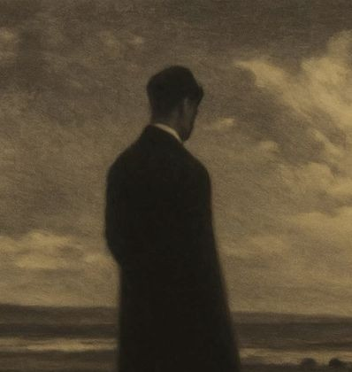
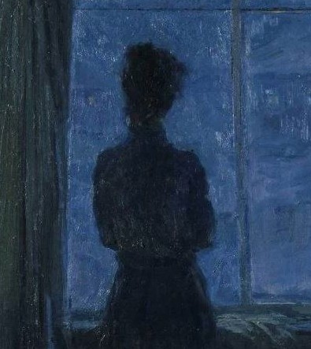
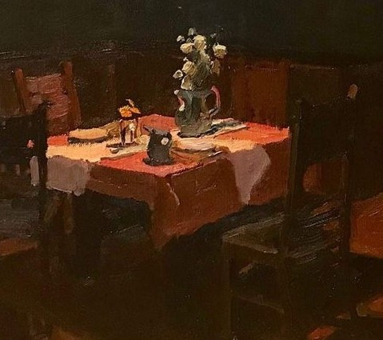
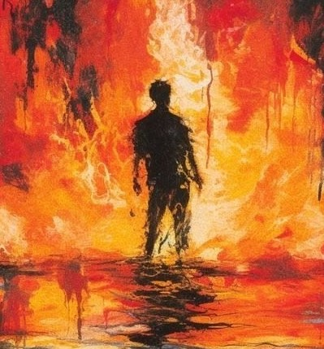

A digital museum where you can - explore, identify and search inside yourself to look for answers.
ROOM I
A room for what makes us feel alive.

ROOM II
A room for what we lost.

ROOM III
A room for when sadness has no sound.

ROOM IV
A room for what once used to be.

ROOM V
A room for the fire we struggle to contain.
ROOM I
Joy is a feeling of great pleasure, happiness, or delight that comes
from success, a sense of well-being, or good fortune
Your brain increases activity in systems linked to reward and motivation,making experiences
feel more meaningful and encouraging you to seek more of what feels good.
Your muscles tend to relax, your energy can increase, and your body may release
chemicals associated with pleasure, connection, and motivation.
Joy can feel like warmth, lightness, excitement, or a sense that everything
feels a little more alive.
You naturally become more likely to approach people, explore, communicate, laugh, and share
the experience with others.
Let yourself enjoy it. Share it with someone, make something from it, or simply stay present
instead of worrying about when it will end.
A yellowish-orange — often associated with brightness, warmth, energy, and life.
Bright and rhythmic — often represented by faster tempos, higher pitches, and sounds that feel open and energetic.
ROOM II
Grief is a natural emotional and physical response to a significant loss, such as the death
of a loved one, a breakup, or a major life change.
Your mind tries to process the reality of a loss, often moving between memories,
disbelief, longing, and attempts to understand what has happened.
Grief can leave the body exhausted, heavy, tense, or physically drained, while sleep,
appetite, and energy may also change.
It can feel like a deep ache, emptiness, or longing that comes in waves and may return unexpectedly.
You may withdraw, cry, seek comfort, revisit memories, or find it difficult to continue
with your usual routines.
Give yourself permission to grieve instead of forcing yourself to feel normal. Talk to someone you trust, let the
feelings come without judging them, and keep small routines like eating, sleeping, and getting outside.
Grief does not have to be rushed.
Grey — often associated with emptiness, absence, uncertainty, and a world that feels less vivid.
Quiet and distant — like a slow melody with long pauses, where the silence feels almost as important as the sound.
ROOM III
Melancholy is a deep, pensive, and long-lasting state of thoughtful sadness.
Your attention turns inward, making you more likely to reflect deeply on memories, meaning,
loneliness, and things that cannot be changed.
The body may become slower and less energetic, with a sense of heaviness, stillness, or tiredness.
It is a quiet sadness that can feel strangely comforting, beautiful, or familiar rather than completely painful.
You may become more withdrawn and reflective, choosing solitude, music, writing, or simply
sitting with your thoughts.
You don't always need to push melancholy away. Give yourself some quiet time, write, listen to music, or do something creative.
If the sadness starts keeping you from everyday life for a long time, reach out to someone you trust or a professional.
Navy blue — often associated with quietness, depth, distance, and sadness.
Soft and slow — often imagined through low tones, gentle melodies, and spaces of silence.
ROOM IV
Nostalgia is a bittersweet emotional state of longing or sentimental yearning for a past period, person, or place.
Your brain retrieves emotionally meaningful memories and reconnects them with the feelings associated with
the past, making those moments feel unusually vivid.
Remembering the past can create warmth and comfort, sometimes accompanied by a feeling of heaviness or
longing because the moment cannot be returned to.
It feels like being emotionally pulled toward a time, place, or person you can remember clearly
but cannot fully return to.
You may revisit old photos, music, places, conversations, or objects that reconnect you with the past.
A reddish-brown — resembling old photographs and giving the feeling of something preserved from another time.
Familiar and distant — like an old song that immediately brings back a specific memory.
ROOM V
Wrath means extreme, fierce anger that often includes a strong wish to punish or take revenge.
Your attention becomes intensely focused on the perceived injustice or threat, while the brain becomes more
prepared to respond rather than calmly consider alternatives.
Your heart rate, blood pressure, breathing, and muscle tension can increase as your body prepares for
confrontation or action.
Wrath can feel like an overwhelming surge of heat, power, pressure, and an intense need to act
against what caused the anger.
You become more likely to confront, shout, attack, or take forceful action to remove the perceived source of the wrong.
Give yourself space before acting on the anger. Step away from the situation, slow your breathing, move your body, or write
down what you're feeling. Once the intensity passes, you can decide what actually needs to be said or done.
Crimson red — associated with heat, blood, intensity, danger, and aggression.
Loud and forceful — imagined through heavy rhythms, sharp sounds, and increasing intensity.
Rooms Within Ourselves is a museum built to help us understand our feelings more deeply, and perhaps those of the people we love.
Museumes are places that preserves things from the past - art, memories, stories and heritage.
So what if our emotions could be preserved in the same way?
Joy, Grief, Melancholy, Nostalgia and Wrath are only a few of the much more emotions we carry. Each room explores one feeling from different aspect.